A turning wheel connects several ideas: angle, distance, speed, and position. This reading develops those connections from a coordinate sketch to a model of a rider’s height over time.
Work through the examples with pencil and paper. Pause at each “Check your understanding” before opening its explanation. You will use these ideas in the explorers, lab, and applications.
What you will learn
- Describe signed rotations and convert between degrees and radians.
- Distinguish arc length, displacement, angular velocity, and tangential speed.
- Derive exact sine and cosine values and use them in every quadrant.
- Connect circular motion with periodic graphs and a height model.
01
Read a point before describing a turn
Imagine a marker on the rim of a turning wheel. We want to describe where the marker is, how far it has traveled, and how quickly it moves. These are different questions. Trigonometry connects them by treating an angle as a record of turning.
Begin with a coordinate plane. The origin is the point where the axes meet. In an ordered pair \((x,y)\), the first number tells us horizontal position and the second tells us vertical position. Positive \(x\) means right; negative \(x\) means left. Positive \(y\) means above the horizontal axis; negative \(y\) means below it.
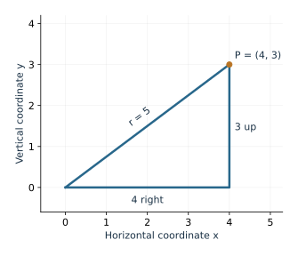
A point and its distance from the origin
For \(P=(4,3)\), the Pythagorean theorem gives the distance \(r\) from the origin:
\[r^2=4^2+3^2=25,\qquad r=5.\]If we shrink this triangle until its hypotenuse is 1, every length is divided by 5. The new point is \((4/5,3/5)\). It points in the same direction as \((4,3)\), but lies on a circle of radius 1. This process is called normalizing the coordinates.
We will use fractions and square roots to describe some positions exactly. An expression such as \(\sqrt2/2\) is an exact number. Its decimal approximation, about 0.707, is useful for estimating, but the rounded decimal loses some information. Both forms will appear in this module.
As you read, keep a sketch beside your calculations. A positive vertical coordinate should put the point above the horizontal axis; a distance should never be negative. These simple checks can catch many errors.
Check your understanding
A point is at \((-3,4)\). Find its distance from the origin and divide both coordinates by that distance. Which signs should remain?
Read the explanation
The distance is \(\sqrt{(-3)^2+4^2}=5\). The normalized point is \((-3/5,4/5)\). It stays left of the vertical axis and above the horizontal axis.
02
An angle records a signed rotation
An angle describes how a ray turns around its endpoint. A ray is a line that starts at one point and extends in one direction. In standard position, the endpoint is the origin and the starting ray points right along the positive \(x\)-axis. The final ray is called the terminal ray.
We use a sign to record the direction of turning. Counterclockwise turns are positive; clockwise turns are negative. A complete turn is \(360^\circ\), a half-turn is \(180^\circ\), and a quarter-turn is \(90^\circ\). The Greek letter \(\theta\), pronounced “theta,” often stands for an angle.
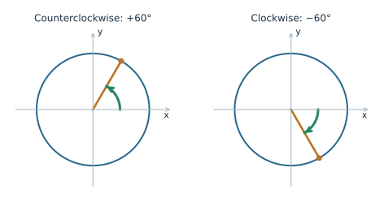
Read the whole rotation
For \(420^\circ\), turn counterclockwise through one full revolution and then another \(60^\circ\):
\[420^\circ=360^\circ+60^\circ.\]For \(-120^\circ\), turn clockwise through \(120^\circ\). The terminal ray points down and left. You could reach that same ray by turning counterclockwise through \(240^\circ\), but the two descriptions record different journeys.
A diagram usually shows the final direction more easily than it shows several complete turns. Do not assume that an angle must be between zero and one revolution. A wheel may turn many times, and a negative angle is a perfectly valid description of motion.
Check your understanding
Where do \(-90^\circ\) and \(450^\circ\) end? Describe the direction and amount of turning for each.
Read the explanation
\(-90^\circ\) is one quarter-turn clockwise and ends on the negative \(y\)-axis. \(450^\circ\) is one full turn plus a quarter-turn counterclockwise and ends on the positive \(y\)-axis.
03
Radians compare an arc with a radius
Degrees divide a full turn into 360 equal pieces. Radians measure the same turning in a way tied directly to the circle. An arc is a curved part of a circle. For a central angle, the two rays meet at the circle’s center and cut off an arc on its circumference.
Take the length of that arc and divide by the radius, using the same length units for both. The ratio is the angle’s magnitude in radians:
\[\boxed{\theta=\frac{s}{r}}\qquad\text{(radian measure)}.\]An angle of 1 radian cuts off an arc whose length equals the radius. It is a little less than \(60^\circ\): about \(57.3^\circ\). A radian is an angle unit; it is not another name for \(\pi\).
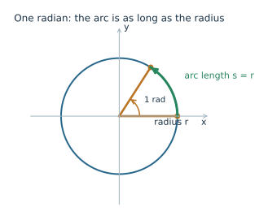
Why does the size of the circle not change the angle? If you double the radius while keeping the same two rays, the arc also doubles. The ratio \(s/r\) stays the same. The picture below shows this for an angle of \(\pi/3\) radians.
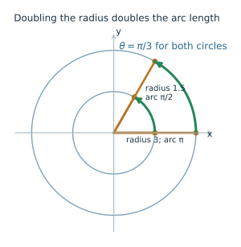
Why one turn is 2π radians
A circle’s circumference is \(2\pi r\). For a complete turn, divide the full circumference by the radius:
\[\theta=\frac{2\pi r}{r}=2\pi.\]Thus \(360^\circ=2\pi\) radians and \(180^\circ=\pi\) radians. The number \(\pi\) is about 3.14159. A half-turn has radian measure \(\pi\) because its arc has length \(\pi r\).
For clockwise motion, use a negative angle. If \(s\) means ordinary arc length, it is nonnegative and \(s/r\) gives the angle’s magnitude. A signed angle requires an orientation as well. We will keep signed arc length and distance traveled separate.
Check your understanding
An arc is 9 cm long on a circle of radius 6 cm. What is the angle’s magnitude in radians? At the same angle on a circle of radius 12 cm, how long is the arc?
Read the explanation
The angle is \(9/6=1.5\) radians. Doubling the radius doubles the arc, so the new arc is 18 cm. The angle remains 1.5 radians.
04
Convert units without changing the angle
The relation \(180^\circ=\pi\) radians lets us write the same angle in either unit. To convert, multiply by a fraction that equals 1 and cancels the unwanted unit.
\[\text{Degrees to radians: multiply by }\frac{\pi\text{ rad}}{180^\circ}.\] \[\text{Radians to degrees: multiply by }\frac{180^\circ}{\pi\text{ rad}}.\]Degrees to radians: 240°
\[240^\circ\cdot\frac{\pi\text{ rad}}{180^\circ}=\frac{240\pi}{180}\text{ rad}=\frac{4\pi}{3}\text{ rad}.\]The degree units cancel. Before calculating, we know that \(240^\circ\) is between a half-turn and a full turn. Our result, \(4\pi/3\), is between \(\pi\) and \(2\pi\), as expected.
Radians to degrees: −5π/3
\[\left(-\frac{5\pi}{3}\text{ rad}\right)\frac{180^\circ}{\pi\text{ rad}}=-\frac{5(180^\circ)}{3}=-300^\circ.\]The \(\pi\) factors and radian units cancel. Keep the negative sign: changing units does not change the direction of rotation.
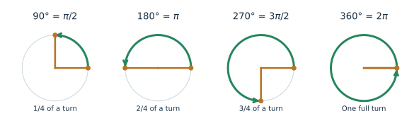
| Degrees | Radians | Fraction of one turn |
|---|---|---|
| \(30^\circ\) | \(\pi/6\) | \(1/12\) |
| \(45^\circ\) | \(\pi/4\) | \(1/8\) |
| \(60^\circ\) | \(\pi/3\) | \(1/6\) |
| \(90^\circ\) | \(\pi/2\) | \(1/4\) |
| \(180^\circ\) | \(\pi\) | \(1/2\) |
| \(270^\circ\) | \(3\pi/2\) | \(3/4\) |
| \(360^\circ\) | \(2\pi\) | 1 |
Leave an answer such as \(4\pi/3\) exact unless a decimal is requested. To estimate it, use the calculator’s \(\pi\) key and round at the end. Replacing \(\pi\) by 3.14 too early can add avoidable error.
Check your understanding
Convert \(72^\circ\) to radians and \(7\pi/5\) radians to degrees. Check each result against one full turn.
Read the explanation
\(72(\pi/180)=2\pi/5\) radians, one fifth of a turn. \((7\pi/5)(180/\pi)=252^\circ\), seven tenths of a turn.
05
Same final direction, different journeys
Two angles are coterminal when they have the same starting and terminal rays. Adding or subtracting a full turn changes the amount of rotation without changing the final direction.
\[\theta+360^\circ k\quad\text{or}\quad\theta+2\pi k,\qquad k\in\mathbb Z.\]The symbol \(\mathbb Z\) means the integers: \(\ldots,-2,-1,0,1,2,\ldots\). Choose the formula that matches your angle unit. For example, \(60^\circ\), \(420^\circ\), and \(-300^\circ\) all end on the same ray.
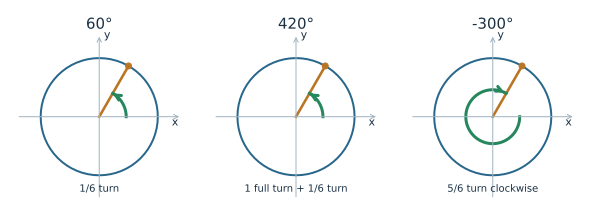
Find a representative between 0 and 2π
Start with \(-13\pi/4\). A full turn is \(2\pi=8\pi/4\), so add full turns using a common denominator:
\[-\frac{13\pi}{4}+\frac{8\pi}{4}=-\frac{5\pi}{4},\qquad -\frac{5\pi}{4}+\frac{8\pi}{4}=\frac{3\pi}{4}.\]Now \(0\leq3\pi/4<2\pi\). The terminal ray is in the upper-left part of the plane. We added two full turns; the original clockwise rotation was not erased from its physical history.
The interval \([0,2\pi)\) includes 0 and excludes \(2\pi\). Those two angles point in the same direction, so including both would repeat a representative. Similarly, use \([0^\circ,360^\circ)\) for a single representative in degrees.
For the final point on a circle, a coterminal angle is enough. For distance traveled, use the actual rotation. A marker turning through \(420^\circ\) travels seven times as far as one turning through \(60^\circ\) on the same circle.
Check your understanding
Find the angle in \([0^\circ,360^\circ)\) coterminal with \(870^\circ\). How many full turns did you set aside?
Read the explanation
\(870^\circ-2(360^\circ)=150^\circ\). We set aside two full turns. The original rotation was two turns plus \(150^\circ\).
06
Arc length, distance, and displacement
The equation \(\theta=s/r\) can be rearranged to find arc length. When \(\theta\) is a signed angle in radians, \(r\theta\) gives a directed arc length:
\[s_{\text{directed}}=r\theta.\]If the motion proceeds in one direction without reversing, the distance traveled is
\[\boxed{\text{distance}=r|\theta|}.\]The absolute-value bars remove the sign. A clockwise journey still covers a positive distance. If motion reverses, calculate the distance for each part and add those distances. The final net angle alone will not tell you the whole distance.
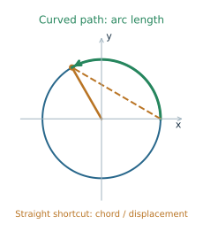
A clockwise turn on a radius-6 circle
A point turns clockwise through \(120^\circ\) on a circle of radius 6 cm. Convert first:
\[\theta=-120^\circ\frac{\pi}{180^\circ}=-\frac{2\pi}{3}\text{ rad}.\]Then the directed arc is \(6(-2\pi/3)=-4\pi\) cm, while the distance traveled is \(4\pi\) cm, about 12.57 cm. The negative directed arc records clockwise orientation; it is not a negative distance.
Displacement is the change in position from the start to the finish. Its magnitude is the straight-line distance between the endpoints, not the arc length. After one complete revolution, a point has traveled a whole circumference but has zero displacement.
Check your understanding
A point on a circle of radius 2 m moves clockwise through half a turn. Find the signed angle, distance traveled, and magnitude of displacement.
Read the explanation
The angle is \(-\pi\) radians. Distance is \(2|{-\pi}|=2\pi\) m. The endpoints are opposite ends of a diameter, so the displacement has magnitude 4 m.
07
Angular velocity and tangential speed
Angular velocity describes the rate at which the angle changes. Over a time interval of length \(\Delta t\), the average angular velocity is
\[\omega=\frac{\Delta\theta}{\Delta t}.\]The Greek letter \(\omega\) is “omega,” and \(\Delta\) means “change in.” With angles in radians and time in seconds, the units are radians per second, written rad/s. Counterclockwise angular velocity is positive; clockwise angular velocity is negative. Angular speed is the nonnegative magnitude \(|\omega|\).
For uniform rotation, the rate is constant. A point farther from the center travels a longer arc during the same turn, so its tangential speed is greater:
\[\boxed{v=r|\omega|}.\]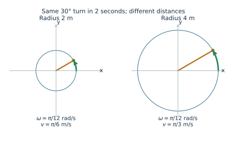
Convert revolutions per minute
A disk makes 6 counterclockwise revolutions per minute. A marker sits 0.5 m from the axis. Convert the angular rate one unit at a time:
\[6\frac{\text{rev}}{\text{min}}\cdot\frac{2\pi\text{ rad}}{1\text{ rev}}\cdot\frac{1\text{ min}}{60\text{ s}}=\frac{\pi}{5}\text{ rad/s}.\]The revolutions and minutes cancel. The marker’s tangential speed is \(v=0.5(\pi/5)=\pi/10\) m/s, about 0.314 m/s. A marker twice as far from the axis would move twice as fast.
The period \(T\) is the time needed for one complete revolution. For uniform rotation, angular speed is \(2\pi/T\). If the rotation is counterclockwise, \(\omega=2\pi/T\); if clockwise, \(\omega=-2\pi/T\). A smaller period means a faster rotation.
Average speed and instantaneous speed agree here because the rotation rate is constant. If the wheel speeds up and slows down, one average rate describes only the chosen interval.
Check your understanding
A wheel of radius 2 m makes one counterclockwise revolution every 20 seconds. Find its angular speed and tangential speed.
Read the explanation
Angular speed is \(2\pi/20=\pi/10\) rad/s. Tangential speed is \(2(\pi/10)=\pi/5\) m/s. The units distinguish turning rate from distance rate.
08
Sine and cosine are coordinates
The unit circle has center \((0,0)\) and radius 1. Start at \((1,0)\) and turn through angle \(\theta\). The coordinates of the resulting point define two functions:
\[\boxed{P=(\cos\theta,\sin\theta)}.\]Cosine is the horizontal coordinate. Sine is the vertical coordinate. The expression \(\sin\theta\) means “the sine of the angle \(\theta\),” not “sin multiplied by theta.” A function takes an input and assigns an output; here the input is an angle and the output is a coordinate.
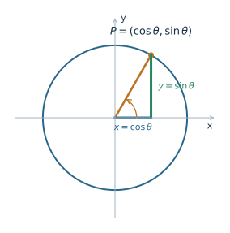
The familiar right-triangle ratios are built into this definition. In the first quadrant, the triangle has hypotenuse 1, adjacent side \(x\), and opposite side \(y\). Thus \(\cos\theta=x/1=x\) and \(\sin\theta=y/1=y\). The circle definition also handles angles beyond a right triangle, including negative angles and multiple turns.
Since every unit-circle point satisfies \(x^2+y^2=1\), its coordinates satisfy
\[\boxed{\cos^2\theta+\sin^2\theta=1}.\]The notation \(\cos^2\theta\) means \((\cos\theta)^2\). Both coordinates lie between \(-1\) and 1. These are useful checks on calculated values.
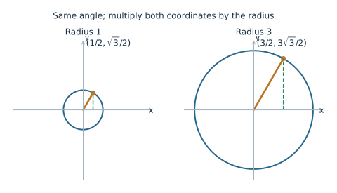
Scale from a unit circle to a real wheel
If a point at angle \(\theta\) has unit-circle coordinates \((3/5,4/5)\), a point at that angle on a radius-5 circle has coordinates \((3,4)\). In general, on a circle centered at the origin:
\[x=r\cos\theta,\qquad y=r\sin\theta.\]These are physical coordinates. Dividing them by the radius recovers the unit-circle coordinates. The radius does not change the angle’s sine or cosine.
Check your understanding
The unit-circle point at an angle is \((-3/5,-4/5)\). What is the corresponding point on a circle of radius 10 centered at the origin?
Read the explanation
Multiply both coordinates by 10: \((-6,-8)\). Its distance from the origin is \(\sqrt{36+64}=10\), and both signs remain negative.
09
Derive exact values from two triangles
You do not need a separate rule for every special angle. Two right triangles supply the coordinate magnitudes for \(30^\circ\), \(45^\circ\), and \(60^\circ\). The Pythagorean theorem explains where the square roots come from.
The 45° triangle
A right triangle with equal legs has two equal acute angles, each \(45^\circ\). If each leg is 1, its hypotenuse is \(\sqrt{1^2+1^2}=\sqrt2\). Divide every side by \(\sqrt2\) to make the hypotenuse 1:
\[\cos45^\circ=\sin45^\circ=\frac{1}{\sqrt2}=\frac{\sqrt2}{2}.\]The last equality comes from multiplying top and bottom by \(\sqrt2\). It changes the form of the number, not its value.
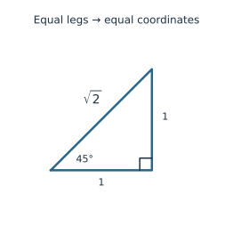
The 30° and 60° triangles
Cut an equilateral triangle of side 2 into two equal right triangles. Each has hypotenuse 2, short leg 1, and long leg \(\sqrt{2^2-1^2}=\sqrt3\). The angles are \(30^\circ\), \(60^\circ\), and \(90^\circ\).
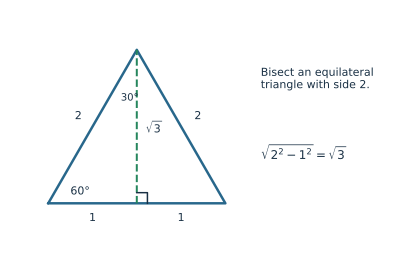
At \(30^\circ\), the horizontal leg is \(\sqrt3\) and the vertical leg is 1. Divide by the hypotenuse 2 to get \((\sqrt3/2,1/2)\). At \(60^\circ\), the roles of the two legs switch.
| Angle | Radians | Cosine: horizontal | Sine: vertical |
|---|---|---|---|
| \(0^\circ\) | 0 | 1 | 0 |
| \(30^\circ\) | \(\pi/6\) | \(\sqrt3/2\) | \(1/2\) |
| \(45^\circ\) | \(\pi/4\) | \(\sqrt2/2\) | \(\sqrt2/2\) |
| \(60^\circ\) | \(\pi/3\) | \(1/2\) | \(\sqrt3/2\) |
| \(90^\circ\) | \(\pi/2\) | 0 | 1 |
The axis points at \(0^\circ\) and \(90^\circ\) come directly from the circle. They do not require a right triangle with a zero-length leg.
Check your understanding
Why is \(\sin60^\circ\) greater than \(\sin30^\circ\)? Check that the two coordinates at \(45^\circ\) satisfy the unit-circle equation.
Read the explanation
The point at \(60^\circ\) is higher: \(\sqrt3/2>1/2\). At \(45^\circ\), \((\sqrt2/2)^2+(\sqrt2/2)^2=1/2+1/2=1\).
10
Use reference angles and quadrant signs
The axes divide the plane into four open regions called quadrants. Number them counterclockwise, beginning with the upper-right region. A point on an axis belongs to none of the open quadrants.
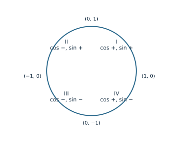
For a terminal ray away from the axes, the reference angle is the acute angle between that ray and the horizontal axis. “Acute” means greater than \(0^\circ\) and less than \(90^\circ\). Always measure it to the horizontal axis, which may mean the negative \(x\)-axis.
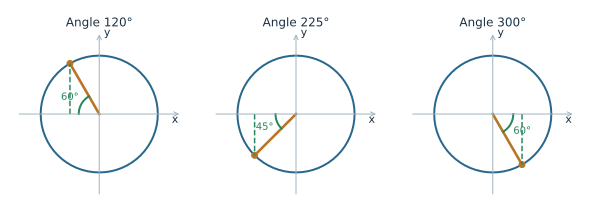
Find the point at 120°
First locate the angle: \(120^\circ\) is in Quadrant II. The reference angle is \(180^\circ-120^\circ=60^\circ\). At \(60^\circ\), the coordinate magnitudes are \(1/2\) and \(\sqrt3/2\). Quadrant II lies left and up, so
\[(\cos120^\circ,\sin120^\circ)=\left(-\frac12,\frac{\sqrt3}{2}\right).\]The horizontal coordinate gets the minus sign. The vertical coordinate remains positive. Squaring and adding gives \(1/4+3/4=1\), as it should.
When the original angle includes several turns, first find a coterminal angle in one revolution. Then locate its quadrant and reference angle. For a point on an axis, read the coordinates directly: \((1,0)\), \((0,1)\), \((-1,0)\), or \((0,-1)\). No acute reference triangle is needed.
A useful routine is: locate the ray, find the acute reference angle, determine the two magnitudes, and assign each sign from the picture. Keep the order \((\cos\theta,\sin\theta)\).
Check your understanding
Find the unit-circle point at \(300^\circ\). Does \(-60^\circ\) give the same point? Explain.
Read the explanation
The reference angle is \(60^\circ\), and Quadrant IV is right and down. The point is \((1/2,-\sqrt3/2)\). Since \(-60^\circ+360^\circ=300^\circ\), the angles are coterminal and give the same point.
11
A moving coordinate traces a wave
A point turning around a circle moves in two dimensions. We can also study one coordinate at a time. Make a graph whose horizontal axis is the angle \(\theta\), and whose vertical axis is the point’s vertical coordinate. That graph is \(y=\sin\theta\).
Be careful about the two pictures. On the circle, \(x\) and \(y\) describe physical position. On the graph of sine, the horizontal axis is the angle input; it is not the point’s horizontal position.
| Angle | Point on the circle | Cosine | Sine |
|---|---|---|---|
| 0 | \((1,0)\) | 1 | 0 |
| \(\pi/2\) | \((0,1)\) | 0 | 1 |
| \(\pi\) | \((-1,0)\) | −1 | 0 |
| \(3\pi/2\) | \((0,-1)\) | 0 | −1 |
| \(2\pi\) | \((1,0)\) | 1 | 0 |
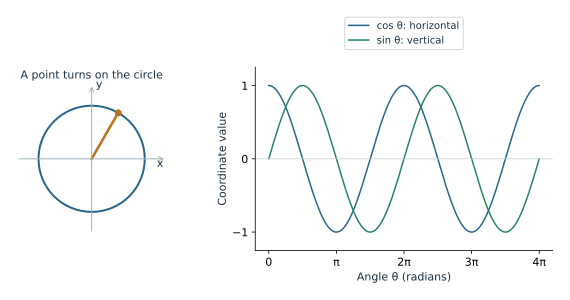
Between these quarter turns, the point moves smoothly, so its coordinates change smoothly. Sine rises from 0 to 1, falls through 0 to −1, and returns to 0. Cosine begins at 1 because the starting point is \((1,0)\).
A function is periodic if its values repeat after a fixed change in input. Adding a complete turn returns the point to exactly the same position:
\[\sin(\theta+2\pi)=\sin\theta,\qquad\cos(\theta+2\pi)=\cos\theta.\]The period of each is \(2\pi\). A half-turn is generally not a period: it moves a point to the opposite side of the circle and reverses both coordinates. For instance, cosine is 1 at 0 and −1 at \(\pi\).
Check your understanding
Why does sine start at 0 while cosine starts at 1? How many complete cycles appear from 0 to \(4\pi\)?
Read the explanation
The starting point is \((1,0)\), so the horizontal coordinate is 1 and the vertical coordinate is 0. The interval from 0 to \(4\pi\) contains two full turns and therefore two cycles.
12
Build a model of height over time
To describe a turning wheel over time, connect two steps: time determines an angle, and the angle determines a position. For uniform rotation starting at angle zero,
\[\theta(t)=\omega t.\]Here \(t\) is elapsed time. The notation \(\theta(t)\) means the angle at time \(t\). If \(\omega\) is in rad/s and \(t\) is in seconds, their product is in radians.
For a wheel of radius \(r\), centered horizontally at 0 and vertically at height \(c\), with a rider starting at the rightmost point,
\[\boxed{x(t)=r\cos(\omega t),\qquad h(t)=c+r\sin(\omega t)}.\]The sine term is vertical displacement from the center. Adding \(c\) gives height above ground. The radius stretches the unit-circle coordinate; it does not change the value of sine itself.
A radius-8 Ferris wheel
A wheel has radius 8 m, center height 10 m, and period 40 s. The rider starts at the rightmost point, and the wheel turns counterclockwise. First find the angular velocity:
\[\omega=\frac{2\pi}{40}=\frac{\pi}{20}\text{ rad/s}.\]Next substitute the radius, center height, and angular rate:
\[x(t)=8\cos\left(\frac{\pi t}{20}\right),\qquad h(t)=10+8\sin\left(\frac{\pi t}{20}\right).\]At \(t=10\), the angle is \(\pi/2\), so the rider is at \((0,18)\). This is the top: the 10 m center height plus the 8 m radius. At \(t=30\), the angle is \(3\pi/2\), so the height is \(10-8=2\) m.
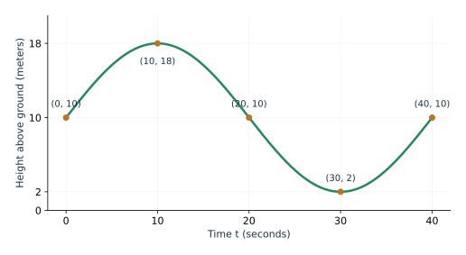
Check a model against the situation before trusting a calculated value. The initial height should be 10 m, the height should stay between 2 and 18 m, and one full cycle should take 40 seconds. A negative height would signal a problem with this physical setup.
If a rider begins at another angle \(\theta_0\), use \(\theta(t)=\theta_0+\omega t\) inside the coordinate formulas. For clockwise rotation, use a negative \(\omega\). Starting position and direction matter; the radius and period alone do not determine a unique height formula.
This is the connection we will develop further: circular motion gives coordinate functions, and those functions let us model repeating behavior.
Check your understanding
In the example, what is the height at 20 seconds? If the radius became 12 m but the center stayed 10 m high, what would the model predict at the bottom?
Read the explanation
At 20 seconds, \(\theta=\pi\), so \(h=10\) m. A radius of 12 m with the same center would predict a bottom height of \(10-12=-2\) m. A wheel meant to stay above ground would need a higher center or a different physical setup.
Choose a relationship
Start with what the situation asks. A formula becomes useful when its quantities and units match the question.
| Question | Relationship | What to check |
|---|---|---|
| How much turning? | \(180^\circ=\pi\text{ rad}\) | Keep the sign; match the unit. |
| Same terminal ray? | \(\theta+2\pi k\), \(k\in\mathbb Z\) | Use full turns, not half-turns. |
| How far along the rim? | \(d=r|\theta|\) | Radians; one direction without reversing. |
| How fast is the turning? | \(\omega=\Delta\theta/\Delta t\) | Signed rate, such as rad/s. |
| How fast is the rim point? | \(v=r|\omega|\) | Distance/time, such as m/s. |
| Where is the unit-circle point? | \((\cos\theta,\sin\theta)\) | Horizontal first; check signs. |
| Where is the radius-\(r\) point? | \((r\cos\theta,r\sin\theta)\) | Center at the origin. |
| Height on a wheel? | \(h=c+r\sin(\omega t)\) | Rightmost start, constant rotation rate. |
Practice with explanation
Attempt each problem before opening the explanation.
Sketch \(-120^\circ\), \(240^\circ\), and \(600^\circ\). Which terminal rays coincide? Justify the result using coterminal angles.
Solution and reasoning
All three terminal rays coincide. \(-120^\circ+360^\circ=240^\circ\), and \(600^\circ-360^\circ=240^\circ\). They point down and left, although the signed rotations differ.
Convert \(225^\circ\) to radians and \(-\pi/3\) radians to degrees, and sketch their terminal rays.
Solution and reasoning
\(225^\circ(\pi/180^\circ)=5\pi/4\) radians, in Quadrant III. \((-\pi/3)(180^\circ/\pi)=-60^\circ\), in Quadrant IV.
A Ferris wheel of radius \(12\) m makes one revolution every \(40\) s. Find its angular speed and a passenger's tangential speed.
Solution and reasoning
One revolution is \(2\pi\) radians, so angular speed is \(2\pi/40=\pi/20\) rad/s. Tangential speed is \(12(\pi/20)=3\pi/5\) m/s, about 1.885 m/s.
A wheel of radius \(0.6\) m turns through \(135^\circ\) in \(3\) seconds. Find the arc length, average angular speed, and average tangential speed. Explain the units of all three answers.
Solution and reasoning
Convert \(135^\circ=3\pi/4\) radians. Arc length is \(0.6(3\pi/4)=9\pi/20\) m. Average angular speed is \((3\pi/4)/3=\pi/4\) rad/s. Average tangential speed is \((9\pi/20)/3=3\pi/20\) m/s, assuming the turn proceeds in one direction.
Without a calculator, describe the point on the unit circle at \(150^\circ\) and at \(330^\circ\). Which coordinates have the same absolute value? Which signs differ?
Solution and reasoning
At \(150^\circ\), the point is \((-\sqrt3/2,1/2)\). At \(330^\circ\), it is \((\sqrt3/2,-1/2)\). Corresponding coordinates have equal absolute values, and both signs are opposite.
A different wheel has radius \(6\) meters, center height \(7\) meters, and period \(30\) seconds. Starting from the rightmost point, write its coordinate model and find the passenger's height after \(7.5\) seconds.
Solution and reasoning
The direction is not specified, so state an assumption. For counterclockwise rotation, \(\omega=2\pi/30=\pi/15\), \(x(t)=6\cos(\pi t/15)\), and \(h(t)=7+6\sin(\pi t/15)\). At 7.5 s the angle is \(\pi/2\), so the height is 13 m. Clockwise rotation would instead put the rider at height 1 m at that time.
Review exercises
Attempt each problem before opening the explanation.
Convert \(-135^\circ\) and \(300^\circ\) to radians.
Solution and reasoning
\(-135^\circ=-3\pi/4\) radians; \(300^\circ=5\pi/3\) radians. Multiply each degree value by \(\pi/180\).
Convert \(11\pi/6\) and \(-5\pi/4\) to degrees.
Solution and reasoning
\(11\pi/6=330^\circ\); \(-5\pi/4=-225^\circ\). Multiply each radian value by \(180/\pi\).
Find an angle in \([0,2\pi)\) coterminal with \(19\pi/6\).
Solution and reasoning
\(19\pi/6-2\pi=19\pi/6-12\pi/6=7\pi/6\), which is in \([0,2\pi)\).
A circle of radius \(8\) cm subtends an angle of \(5\pi/12\). Find the arc length.
Solution and reasoning
\(s=8(5\pi/12)=10\pi/3\) cm. The angle is already in radians.
A turntable makes \(33\frac13\) revolutions per minute. Find angular speed in radians per second.
Solution and reasoning
\(33\frac13=100/3\) rev/min. Multiply by \(2\pi\) rad/rev and divide by 60 s/min to get \(10\pi/9\) rad/s.
Explain why sine and cosine must lie between \(-1\) and \(1\).
Solution and reasoning
They are coordinates on a radius-1 circle centered at the origin. No such point can be farther than 1 unit horizontally or vertically from the origin.
Find unit-circle coordinates at \(2\pi/3\), \(5\pi/4\), and \(11\pi/6\).
Solution and reasoning
At \(2\pi/3\): \((-1/2,\sqrt3/2)\). At \(5\pi/4\): \((-\sqrt2/2,-\sqrt2/2)\). At \(11\pi/6\): \((\sqrt3/2,-1/2)\). Use the reference angle for magnitudes and the quadrant for signs.
A Ferris wheel has radius \(10\) m and center \((0,12)\). Write a rider's coordinates after turning through \(\theta\) from the rightmost point.
Solution and reasoning
\(x=10\cos\theta\), \(y=12+10\sin\theta\). The center adds 12 to the vertical coordinate; the radius multiplies both unit-circle coordinates.
A point begins at \((1,0)\) and turns through \(-7\pi/6\) radians. Determine a coterminal angle in \([0,2\pi)\) and give the exact point.
Solution and reasoning
\(-7\pi/6+2\pi=5\pi/6\). The point is \((-\sqrt3/2,1/2)\), in Quadrant II.
A wheel completes \(9\) revolutions in \(2\) minutes. Determine its angular speed in both radians per second and degrees per second.
Solution and reasoning
In 120 seconds the wheel turns through \(18\pi\) radians, or \(3240^\circ\). Divide each by 120: the angular speed is \(3\pi/20\) rad/s, or \(27^\circ\)/s.
A rider on a circle of radius \(4\) m moves through \(75^\circ\). Find the arc length exactly in terms of \(\pi\) and approximately to two decimals.
Solution and reasoning
\(75^\circ=5\pi/12\) radians, so the arc is \(4(5\pi/12)=5\pi/3\) m, approximately 5.24 m.
Describe the coordinates at \(3\pi/2\) and explain why a terminal point on an axis does not belong to any open quadrant.
Solution and reasoning
The point is \((0,-1)\), on the negative \(y\)-axis. Open quadrants exclude their boundary axes, so it belongs to none of them.
For the Ferris-wheel model in the chapter, explain which physical quantity would change if the coefficient \(8\) in both coordinate equations became \(12\).
Solution and reasoning
The radius would increase from 8 to 12 m, increasing the amplitude of each coordinate function to 12. The period remains 40 s and the center height remains 10 m. The predicted height range becomes \([-2,22]\) m; a wheel staying above ground would require a higher center.
Continue with the module
Use the unit-circle explorer to test signed turns and radius changes. Then use Circle to Wave to follow a coordinate through two revolutions. Keep your sketches and units in your lab explanations.
Further reading: OpenStax, Precalculus 2e, 5.1 Angles and 5.2 Unit Circle: Sine and Cosine Functions.